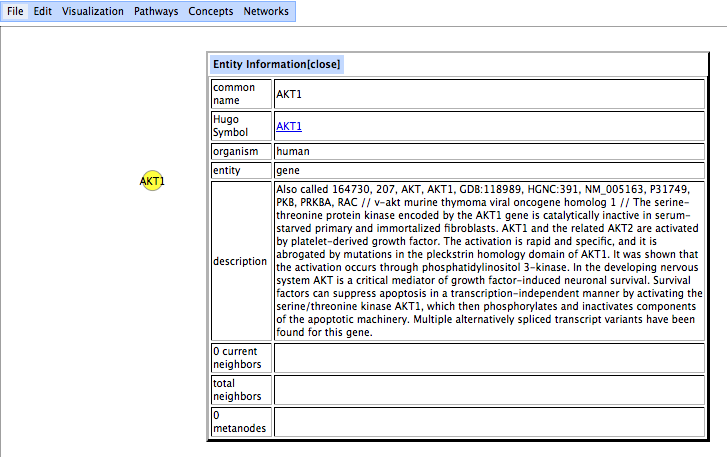
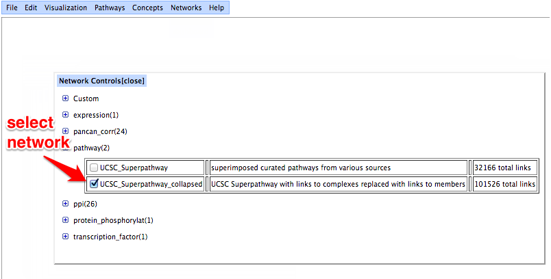
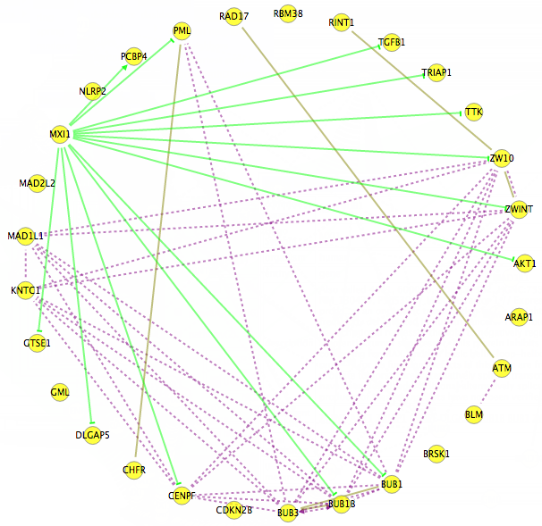

Tutorial for Displaying an Interaction Network
Nodes and edges make up the network graph. Nodes, which represent biological entities, are added in one of several ways. The two most basic ways to accomplish this is to look them up individually in the Interaction Browser's annotation files or by pasting in a list of identifiers in a text area. Users select networks from checkboxes arranged by datatypes. When a network is turned on, the relevant edges are displayed in the network. The user can then use the spring-embedded layout to make the network visually appealing. The network graph is interactive, meaning that nodes may be manually repositioned.
-
Visit the Interaction Browser (IB) webpage by clicking here or the link near the bottom of this page. The IB will open in a new window, so you can refer back to this page easily. When the page is done loading, you will see a screen with a menu bar at the top that looks like:
-
To search for a particular gene of interest, bring up a dialog box by going to Concepts -> browse. Next, search the annotation for `kinase'. The result is a selectable list of genes that includes `kinase' in the annotation. To select "AKT1", click "AKT1" in the list and then the "add selected item" button to create a node.
-
The AKT1 gene has been added as a node to the network visualization, the main central area of the browser window. Double-clicking on a node brings up a description of the entity in a dialog box.

-
To add a group of entities to the network visualization, enter a list in the `User Input' text area. Here is a list to try out: MAD1L1 BLM KNTC1 PML TTK BRSK1 MXI1 TGFB1 GTSE1 TRIAP1 CDKN2B PCBP4 BUB1 GML BUB3 ZW10 DLGAP5 RINT1 CENPF NLRP2 ATM ZWINT BUB1B RBM38 CHFR MAD2L2 ARAP1 RAD17
-
The specified set of nodes has been added to the network visualization by clicking the button, "lookup entities in database, then add".
-
To select a network, go to the menu bar -> Networks -> browse. When a network is selected, by clicking on the checkbox next to its name, its edges appear in the network visualization as colored lines. In the illustrated example, the `UCSC_Superpathway_collapsed' network is turned on. For this network, regulatory relationships are indicated using arrowheads for activating links and bars for deactivating links. Also, solid lines are used for post-transcriptional regulation and dotted lines are used for transcriptional regulation.

-
The Interaction Browser can visualize multiple networks simultaneously with the edges from the networks appearing as lines of different colors. Here, the graph is visualized with a circle layout, where the nodes are placed on the edge of a circle. The layout is selected by going to the menu bar -> Visualization -> layout.

-
This is the same graph as above, except it uses the spring-embedded layout algorithm instead of the circle layout.
-
Once you have a network displayed, you may be interested in several output options that are available in the IB. These options are are selected by going to the menu bar -> File.
-
The links within the network may be downloaded as a text file.
-
A list of the currently selected nodes may be downloaded as a text file.
-
This concludes the basic procedure for visualizing a network in the Interaction Browser.